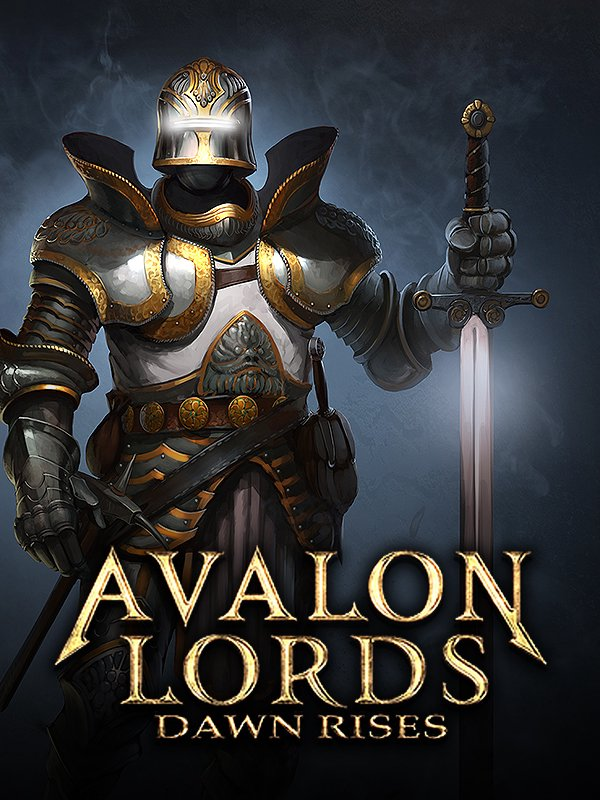

Avalon Lords: Dawn Rises
Avalon Lords: Dawn Rises
Details
|  | |
| Playtime | 1m 0s |
| Last Activity | 17/09/2018 12:41:06 |
| Added | 06/06/2016 |
| Modified | Never |
| Completion Status | Played |
| Source | Steam |
| Platform | PC |
| Release Date | 01/04/2016 |
| Community Score | 54 |
| Critic Score | 60 |
| User Score | |
| Genre | Early Access Indie Strategy |
| Developer | Animus Interactive Inc |
| Publisher | Animus Interactive Inc |
| Feature | Achievements Cloud saves Co-op Cross-Platform Multiplayer Leaderboards Multiplayer Single Player Stats |
| Links | PCGamingWiki Community Hub Discussions Guides Achievements Store Page News |
Description
*** PLEASE NOTE - this game is currently in Early Access. Expect there to be some bugs and incomplete content. We are working hard to fix things as well as add in more stuff. We value your feedback and invite you to give us your thoughts in the Community Hub.
Good day traveler! I see that you are new to the lands of Spero, located within the Western realm of Avalon. Please allow me to be your humble guide as you take your first steps towards taming these lands and conquering your foes!
Did they hand you a brochure at the gate when you first came in? No? Well then, my sincerest apologies, please let my good friend Steam Guide help you get up to speed. In just a few minutes he can certainly aid you with information on our Game Controls, the various Building Types you can construct, as well as the Troop Types that can be found within our great land.
Now then, if you would just step this way, we can continue with the tour...
Avalon Lords: Dawn Rises is a medieval real-time-strategy game set in the lands of Spero during the Order of Dawn’s rise to power. During its Early Access launch, the game will feature three multiplayer combat modes, and post-launch, we will be adding single-player campaign modes.
Our story begins in the Plains of Spero, where five great City States rule over the land. Tensions have risen to boiling point, and several powerful City Lords wish to take control of the region and name themselves king. Peaceful negotiations have descended into to all-out war, plunging the region into chaos. Lords fight against each other to gain power and land - each one hoping to claim the throne...
You start as a minor general in the City of Avon, one of Spero’s five City States. Lord Avon has sent you out to form a new city in a strategically desirable part of the realm and defeat anyone seeking to claim those lands for themselves. Along the way you will meet a rising leader who seeks to unite the warring Lords under one order – the Order of Dawn.
Avalon Lords: Dawn Rises features three different multiplayer game modes played out within a beautifully sculpted 3-dimensional environment. In Conflict Mode you will need to gather resources, construct buildings and recruit soldiers in order to defeat your foes. Combat Mode puts you straight into the action; you can recruit your forces in the Army Builder and deploy them in battle without the need for gathering or building. Finally, join your faction allies in Empire Mode to help conquer locations across the land.
Good day traveler! I see that you are new to the lands of Spero, located within the Western realm of Avalon. Please allow me to be your humble guide as you take your first steps towards taming these lands and conquering your foes!
Did they hand you a brochure at the gate when you first came in? No? Well then, my sincerest apologies, please let my good friend Steam Guide help you get up to speed. In just a few minutes he can certainly aid you with information on our Game Controls, the various Building Types you can construct, as well as the Troop Types that can be found within our great land.
Now then, if you would just step this way, we can continue with the tour...
Avalon Lords: Dawn Rises is a medieval real-time-strategy game set in the lands of Spero during the Order of Dawn’s rise to power. During its Early Access launch, the game will feature three multiplayer combat modes, and post-launch, we will be adding single-player campaign modes.
Our story begins in the Plains of Spero, where five great City States rule over the land. Tensions have risen to boiling point, and several powerful City Lords wish to take control of the region and name themselves king. Peaceful negotiations have descended into to all-out war, plunging the region into chaos. Lords fight against each other to gain power and land - each one hoping to claim the throne...
You start as a minor general in the City of Avon, one of Spero’s five City States. Lord Avon has sent you out to form a new city in a strategically desirable part of the realm and defeat anyone seeking to claim those lands for themselves. Along the way you will meet a rising leader who seeks to unite the warring Lords under one order – the Order of Dawn.
Avalon Lords: Dawn Rises features three different multiplayer game modes played out within a beautifully sculpted 3-dimensional environment. In Conflict Mode you will need to gather resources, construct buildings and recruit soldiers in order to defeat your foes. Combat Mode puts you straight into the action; you can recruit your forces in the Army Builder and deploy them in battle without the need for gathering or building. Finally, join your faction allies in Empire Mode to help conquer locations across the land.
Game Features
- Strategic gameplay! Simply having the most troops does not guarantee a win; it's how you use those forces that counts.
- Large scale epic battles! Watch as hundreds, perhaps thousands, of soldiers engage in massive conflicts.
- Construct your cities in open sandbox fashion. There are no grid lines to follow here; place buildings anywhere you wish.
- Construct over a dozen different types of buildings, each with their own unique purpose. Many buildings can be upgraded to make them better, stronger - yes, we have the technology!
- Troops each have their own abilities and are effective in different ways. With over a dozen different types of troops, you can mix and match them to create an unstoppable force.
- Siege weapons - so awesome they need a listing all their own! They are capable of doing great damage from a distance, destroying buildings and devastating troops.
- Work your way through the Technology Research tree to upgrade your forces and create more durable buildings.
- Persistent player accounts - with every battle, you gain experience to level up your account. Use the Honor points you acquire to buy permanent Specialization perks, which will follow you no matter where you go in the world of Avalon.
- Online multi-player modes include a choice of both Free-For-All or Team Combat, with up to six players at a time. Feeling especially tough? Take on others in a 1 versus 2 or 1 versus 3 match and show them all who is the real Lord of Avalon!
- Single-player practice matches - not yet ready to venture forth against live players? Try your hand against the CPU AI, which features four difficulty levels ranging from “Easy” to the dreaded “Knightmare” mode.
- Just feel like watching the carnage for a while? Check out a live match using the custom Spectator Mode, which is designed to include all the information you would need for an eSports shoutcast!
- Free camera movement - move your camera any way you wish. Zoom way out to get an overall sense of the battlefield or way in to watch the bloodshed up close and personal!